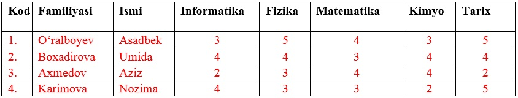
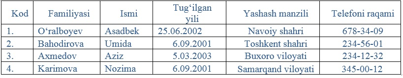
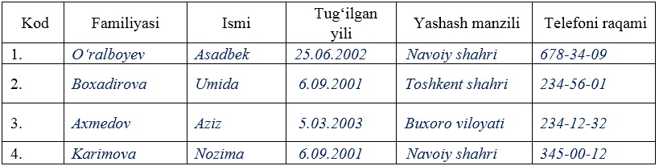
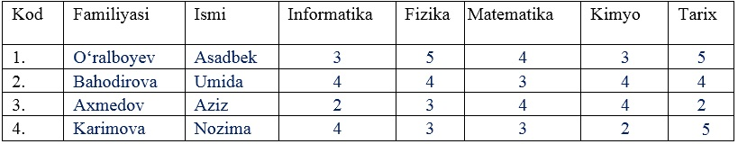

1-variant
1. Sinfngiz qizlari haqidagi ma’lumotlar omborini yarating va ular ustida saralash ishlarini bajaring.
2. MS Access 2010 da quyidagi rangli jadvalni hosil qiling:

3. MS Access 2010 da max funksiyasidan foydalanishni tushuntirib bering.
4. MS Access 2010 da quyidagi amallarni bajaring: 52+6-4*6+9/4
2-variant
1. To‘rtta jadval hosil qiling va ularni o‘zaro bog‘lang.
2. MS Access 2010 da quyidagi rangli jadvalni hosil qiling:

3. MS Access 2010 da min funksiyasidan foydalanishni tushuntirib bering.
4. MS Access 2010 da quyidagi amallarni bajaring: 4-8*52+9.
3-variant
1. Sinf o‘quvchilarining familiyasi yordamida qidiruvchi amaliy dastur yarating.
2. MS Access 2010 da quyidagi jadvalni hosil qiling:

3. MS Access 2010 da tan funksiyasidan foydalanishni tushuntirib bering.
4. MS Access 2010 da quyidagi amallarni bajaring: 53+7+4*6-5/7.
4-variant
1. O‘quvchilar haqida ma’lumotlarni kirituvchi forma oynasini yarating.
2. MS Access 2010 da quyidagi jadvalni hosil qiling:

3. MS Access 2010 da log funksiyasidan foydalanishni tushuntirib bering.
4. MS Access 2010 da quyidagi amallarni bajaring: 23-6+4*6+7/4.